3.6 Initial Conditions for Tracking
Description For the study of nonlinear system the choice of initial conditions is of crucial importance.
The input structure for the initial conditions was therefore organise in such a way as to allow for maximum
flexibility. SixTrack is optimised to reach the largest possible number of turns. In order to derive the
Lyapunov exponent and thereby to distinguish between regular and chaotic motion, the particle has a close
by companion particle. Moreover, experience has shown that varying only the amplitude while
keeping the phases constant is sufficient to understand the nonlinear dynamics, as a subsequent
detailed post–processing allows to find the dependence of the parameter of interest on these
phases.
3.6.1 Tracking Parameters
Description All tracking parameters are defined with this input block, the initial coordinates are
generally set here, too. A fine tuning of the initial condition is done with Initial Coordinates block ( 3.6.2)
and the parameters for the synchrotron oscillation are given in block ( 3.6.3)
Keyword TRAC
Number of data lines 3
Format
- data line 1: numl numlr napx amp(1) amp0 ird imc
- data line 2: idy(1) idy(2) idfor irew iclo6 (integers)
- data line 3: nde(1) nde(2) nwr(1) nwr(2) nwr(3) nwr(4) ntwin ibidu (integers)
-
numl
- (integer) Number of turns in the forward direction
-
numlr
- (integer) Number of turns in the backward direction
-
napx
- (integer) Number of amplitude variations
-
amp(1), amp0
- (floats) Start and end amplitude (any sign) in the horizontal phase space plane for the
amplitude variations. The vertical amplitude is calculated using the ratio between the horizontal
and vertical emittance set in the Initial Coordinates block ( 3.6.2), where the initial phase in
phase space are also set. Additional information can be found in the Remarks.
-
ird
- (integer) Switch for the type of amplitude variation. In case napx = 1 the amplitude nstart is
used.
- ird = 0 : amplitudes are varied between the amplitudes amp(1) and amp0 with equal
increments:
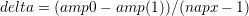
- ird = 1 : amplitude variation to find an estimate for the short term dynamic aperture.
The amplitude is increased or decremented corresponding to stable motion or particle loss
respectively. The change of amplitude is reduced each iteration i ≤ (napx − 1) to:
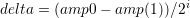
-
imc
- (integer) Number of variations of the relative momentum deviation
 . The maximum value of the
relative momentum deviation
. The maximum value of the
relative momentum deviation  is taken from that of the first particle in the Initial Coordinates block
( 3.6.2). The variation will be between ±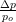(max) in steps of
is taken from that of the first particle in the Initial Coordinates block
( 3.6.2). The variation will be between ±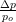(max) in steps of  (max) / (imc–1).
(max) / (imc–1).
-
idy(1), idy(2)
- A tracking where one of the transversal motion planes shall be ignored is only possible when
all coupling terms are switched off. The part of the coupling that is due to closed orbit and other effects
can be turned off with these switches.
- idy(1), idy(2) = 1 : coupling on
- idy(1), idy(2) = 0 : coupling to the horizontal and vertical motion plane respectively
switched off
-
idfor
- Usually the closed orbit is added to the initial coordinates. This can be turned off using idfor, for
instance when a run is to be prolonged.
- idfor = 0 : closed orbit added
- idfor = 1 : initial coordinates unchanged
- idfor = 2 : prolongation of a run, taken the initial coordinates from unit # 13
-
irew
- To reduce the amount of tracking data after each amplitude and relative momentum deviation iteration
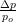the binary output units 90 and lower (see Appendix C) are rewound. This is always done when the
post–processing is activated ( 3.5.12). For certain applications it may be useful to store all data. The
switch irew allows for that.
- irew = 0 : unit 90 (and lower) rewound
- irew = 1 : all data on unit 90 (and lower)
-
iclo6
- This switch allows to calculate the 6D closed orbit using the differential algebra package. It is ignored
in the regular tracking versions. It is active in all versions that link to the Differential Algebra package.
This 6D closed orbit can be calculated from any longitudinal position contrary to earlier
versions.
- iclo6 = 0 : switched off
- iclo6 = 1 : calculated
- iclo6 = 2 : calculated and added to the initial coordinates ( 3.6.2).
- iclo6 = 5 or =6: like for 1 and 2 but in addition a guess closed orbit is read (in free format)
from file unit # 33.
-
nde(1)
- Number of turns at flat bottom, useful for energy ramping.
-
nde(2)
- Number of turns for the energy ramping. numl–nde(2) gives the number of turns on the flat top. For
constant energy with nde(1) = nde(2) = 0 the particles are considered to be on the flat
top.
-
nwr(1)
- Every nwr(1)’th turn the coordinates will be written on unit 90 (and lower) in the flat bottom part of
the tracking.
-
nwr(2)
- Every nwr(2)’th turn the coordinates in the ramping region will be written on unit 90 (and
lower).
-
nwr(3)
- Every nwr(3)’th turn at the flat top a write out of the coordinates on unit 90 (and lower) will occur.
For constant energy this number controls the amount of data on unit 90 (and lower), as the particles
are considered on the flat top.
-
nwr(4)
- In cases of very long runs it is sometimes useful to save all coordinates for a prolongation of a run
after a possible crash of the computer. Every nwr(4)’th turn the coordinates are written to unit
6.
-
ntwin
- For the analysis of the Lyapunov exponent it is usually sufficient to store the calculated distance of
phase space together with the coordinate of the first particle (ntwin set to one). You may want to
improve the 6D calculation of the distance in phase space with sigcor, dpscor (see 3.6.2)
when the 6D closed orbit is not calculated with iclo6 ≠2. If storage space is no problem,
one can store the coordinates of both particles (ntwin set to two). The distance in phase
space is then calculated in the post–processing procedure (see 3.5.12). This also allows a
subsequent refined Lyapunov analysis using differential–algebra and Lie–algebra techniques
([26]).
-
ibidu
- Switch to creat or read binary dump of the full accelerator decription on file # 32. The parameters
relevant to tracking, i.e. numl, amp0, amp(1), amp(2), damp, chi0, chid, rat, x1, x′1, y1, y′1, σ1, 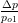,
x2 , x′2 , y2, y′2, σ2, 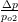, time0, time1, are to be given via the tracking parameter file #
3.
- ibidu = 1 : write dump
- ibidu = 2 : read dump
Remarks
- This input data block is usually combined with the Initial Coordinates input block ( 3.6.2) to
allow a flexible choice of the initial coordinates for the tracking.
- For a prolongation of a run the following parameters have to be set :
- in this input block : idfor = 1
- in the Initial coordinates input block :
- itra = 0
- take the end coordinates of the previous run as the initial coordinates (including all
digits) for the new run.
- A feature is installed for a prolongation of a run by using idfor = 2 and reading the initial data from
unit # 13. The end coordinates are now written on unit # 12 after each run. Intermediate coordinates
are also written on unit # 12 in case the turn number nwr(4) is exceeded in the run. The user takes
responsibility to transfer the required data from unit # 12 to unit # 13 if a prolongation is
requested.
- Some illogical combinations of parameters have been suppressed.
- The initial coordinates are calculated using a proper linear 6D transformation: amp(1) is still the
maximum horizontal starting amplitude (excluding the dispersion contribution) from which the
emittance of mode 1 eI is derived, rat (see 3.6.2) is the ratio of eII∕eI of the emittances of the two
modes. The momentum deviation 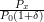 is used to define a longitudinal amplitude. The 6 normalized
coordinates read:
and are then transformed with the 6D linear transformation into real space. Note that results may
differ from those of older versions.
3.6.2 Initial Coordinates
Description The Initial Coordinates input block is meant to manipulate how the initial coordinates are
organise, which are generally set in the tracking parameter block ( 3.6.1). Number of particles, initial phase,
ratio of the horizontal and vertical emittances and increments of 2 × 6 coordinates of the two particles, the
reference energy and the starting energy for the two particles.
Keyword INIT
Number of data lines 16
Format
- first data line: itra chi0 chid rat iver
- data lines 2 to 16: 15 initial coordinates in table 3.4
-
itra
- (integer) Number of particles
- itra = 0 : Amplitude values of tracking parameter block ( 3.6.1) are ignored and coordinates
of data line 2–16 are taken. itra is set internally to 2 for tracking with two particles. This
is necessary in case a run is to be prolonged.
- itra = 1 : Tracking of one particle, twin particle ignored
- itra = 2 : Tracking the two twin particles
-
chi0
- Starting phase of the initial coordinate in the horizontal and vertical phase space projections
-
chid
- Phase difference between first and second particles
-
rat
- Denotes the emittance ratio (eII∕eI) of horizontal and vertical motion. For further information see the
Remarks of input block ( 3.6.1).
-
iver
- In tracking with coupling it is sometimes desired to start with zero vertical amplitude which can be
painful if the emittance ratio rat is used to achieve it. For this purpose the switch iver has been
introduced:
- iver = 0 : Vertical coordinates unchanged
- iver = 1 : Vertical coordinates set to zero.
Table 3.4: Initial Coordinates of the 2 Particles
|
|
| data line | contents |
|
|
| 2 | x1 [mm] coordinate of particle 1 |
| 3 | x′1 [mrad] coordinate of particle 1 |
| 4 | y1 [mm] coordinate of particle 1 |
| 5 | y′1 [mrad] coordinate of particle 1 |
| 6 | path length difference 1 (σ1 = s − vo × t) [mm] of particle 1 |
| 7 | 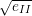 of particle 1 |
| 8 | x2 [mm] coordinate of particle 2 |
| 9 | x′2 [mrad] coordinate of particle 2 |
| 10 | y2 [mm] coordinate of particle 2 |
| 11 | y′2 [mrad] coordinate of particle 2 |
| 12 | path length difference (σ2 = s − vo × t) [mm] of particle 2 |
| 13 | of particle 2 |
| 14 | energy [MeV] of the reference particle |
| 15 | energy [MeV] of particle 1 |
| 16 | energy [MeV] of particle 2 |
|
|
| |
Remarks
- These 15 coordinates are taken as the initial coordinates if itra is set to zero (see above). If itra
is 1 or 2 these coordinates are added to the initial coordinates generally defined in the tracking
parameter block ( 3.6.1). This procedure seems complicated but it allows freely to define the
initial difference between the two twin particles. It also allows in case a tracking run should be
prolonged to continue with precisely the same coordinates. This is important as small difference
may lead to largely different results.
- The reference particle is the particle in the centre of the bucket which performs no synchrotron
oscillations.
- The energy of the first and second particles is given explicitly, again to make possible a
continuation that leads precisely to the same results as if the run would not have been interrupted.
- There is a refined way of prolonging a run, see the Tracking Parameters input block ( 3.6.1).
3.6.3 Synchrotron Oscillation
Description The parameters needed for treating the synchrotron oscillation in a symplectic manner are
given in the Synchrotron Oscillation input block.
Keyword SYNC
Number of data lines 2
Format
- first data line: harm alc u0 phag tlen pma ition dppoff
- second data line: dpscor sigcor
-
harm
- Harmonic number
-
alc
- Momentum compaction factor, used here only to calculate the linear synchrotron tune QS.
-
u0
- Circumference voltage in [MV]
-
phag
- Acceleration phase in degrees
-
tlen
- Length of the accelerator in meters
-
pma
- rest mass of the particle in MeV∕c2
-
ition
- (integer) Transition energy switch
- ition = 0 for no synchrotron oscillation (energy ramping still possible)
- ition = 1 for above transition energy
- ition = –1 for below transition energy
-
dppoff
- Offset Relative Momentum Deviation 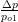: a fixpoint with respect to synchrotron oscillations. It
becomes active when the 6D closed orbit is calculated (see item iclo6 in section 3.6.1).
-
dpscor, sigcor
- Scaling factor for relative momentum deviation 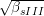 and the path length difference
(σ = s − vo ×t) respectively. They can be used to improve the calculation of the 6D distance in phase
space, but is only used when ntwin = 1 in the tracking parameter input block (3.6.1). Please set to 1
when the 6D closed is calculated.